1과목: 유통경영
1. 조직변화의 이중모형(dual-core approach)에 따르면 조직을 구성하는 두 개의 핵심부문인 관리부문과 기술부문에서 조직변화가 발생할 수 있다. 조직변화의 이중모형이 제시하는 관리부문 변화에 대한 설명으로 가장 옳지 않은 것은?
2. 재무제표는 자산과 부채 및 자본으로 구성되어 있다. 부채에 포함되는 항목으로 옳은 것은?
3. 인사고과에서 발생하기 쉬운 각종 오류에 대한 설명 중에서 옳지 않은 것은?
4. 아래 글상자 수치를 참고하여 손익분기점 매출액을 구한 것으로 옳은 것은?
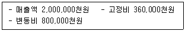
5. 사회적 가치와 기업의 사회적 책임(CSR)에 대한 설명 중 가장 옳지 않은 것은?
6. 유통전략수립의 일반적인 프로세스로 가장 옳은 것은?
7. 서비스를 강조하는 백화점과 저렴한 가격의 제품을 대량으로 판매하는 창고형 할인점의 두 소매업태 간 특성 차이를 고려한 시장세분화의 기준으로 가장 옳은 것은?
8. 고객이 요구하는 유통경로서비스의 내용으로서 가장 옳지 않은 것은?
9. 아래 그림의 ㉠은 조직구성원의 몰입과 참여, 책임감, 주인의식 등을 통해 외부환경 변화에 빠르게 대응하려는 전략적 상황을 나타낸다. 이 상황에 적합한 전략 및 조직설계를 뒷받침할 수 있는 조직문화 유형으로서 가장 옳은 것은?
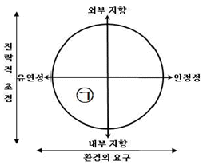
10. 직무분석 및 정보수집을 위해 활용할 수 있는 다양한 직무분석 접근방법들이 개발되어 있다. 이들 가운데 급변하는 경영환경에 직면한 조직의 직무분석을 위한 접근방법으로서 가장 옳은 것은?
11. 동기부여에 관한 공정성이론의 설명으로서 가장 옳지 않은 것은?
12. 목표에 의한 관리(MBO)는 개인이 적절한 시간범위 내에 달성할 것으로 기대하는 성과목표를 설정하고 그 달성정도를 기준으로 성과를 평가하는 방법이다. MBO의 목표가 갖추어야 할 요건으로서 가장 옳지 않은 것은?
13. 독점규제 및 공정거래에 관한 법률(법률 제19510호, 2023.6.20., 일부개정)은 공정한 거래를 해칠 우려가 있는 일정한 행위를 불공정거래행위로 규정하여 금지한다. 아래 글상자의 내용 중에서 불공정거래행위에 해당하는 항목만을 모두 포함한 내용으로 옳은 것은?
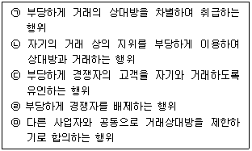
14. 할부거래법(법률 제19256호, 2023.3.21., 일부개정)에서 명시하고 있는 소비자가 할부계약을 철회할 수 없는 경우로 옳지 않은 것은?
15. 아래 글상자에서 설명하는 소매경영 활동으로 옳은 것은?
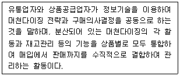
16. 아래 글상자에서 설명하는 내용과 관련된 이론으로 가장 옳은 것은?
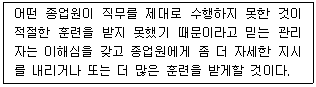
17. 아래 글상자에서 설명하는 내용과 관련된 이론으로 가장 옳은 것은?
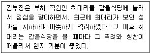
18. 아래 글상자는 경로성과의 거시적 평가에 관한 내용이다. 괄호 안에 들어갈 용어를 순서대로 나열한 것으로 가장 옳은 것은?
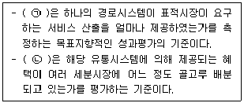
19. 아래 글상자는 재고에 대한 총마진수익률(GMROI)을 계산하는 방법이다. 괄호 안에 들어갈 용어를 순서대로 나열한 것으로 옳은 것은?
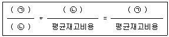
20. 새로운 소매업태가 나타나게 되는 이유를 설명하는 가설 및 이론으로 옳지 않은 것은?
2과목: 물류경영
21. RFID가 바코드에 비해 가지는 특징에 대한 설명으로 가장 옳지 않은 것은?
22. 기계류와 같은 금속 제품이 운송 과정에서 녹이 생기는 것을 방지하기 위해 실시하는 포장으로 가장 옳은 것은?
23. 아래 글상자에서 설명하는 용어로 옳은 것은?
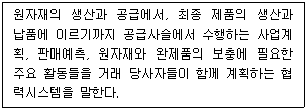
24. 아래 글상자의 정보를 이용해서 계산한 EOQ는 몇 개인가?
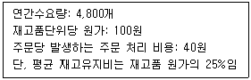
25. FIATA FBL의 약관해설에 관련된 정의 내용으로 옳지 않은 것은?
26. 위험물운송에 관한 운송수단, 국제기구, 규칙이 서로 옳지 않게 나열된 것은?
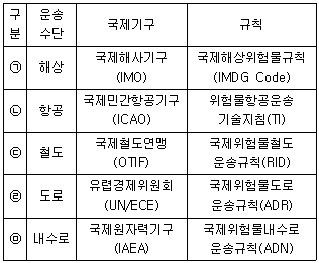
27. 고객서비스의 주요 요소인 주문주기시간(order cycle time)을 구성하는 요소들과 관련한 설명으로 가장 옳은 것은?
28. 기능별 물류비에 대한 설명으로 가장 옳지 않은 것은?
29. 복합운송증권(MT B/L)의 법적 성질로 옳은 것만을 모두 나열한 것은?
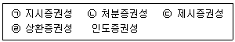
30. 아래 글상자의 괄호 안에 들어갈 내용으로 가장 옳은 것은?
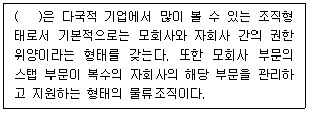
31. 아래 글상자는 물류정책기본법(법률 제18945호, 2022. 6.10., 일부개정)에서 규정하는 국가물류기본계획의 수립에 관한 내용이다. 괄호 안에 들어갈 내용을 순서대로 바르게 나열한 것은?
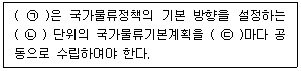
32. 아래 표의 항공화물운송장과 선하증권의 차이점 중 옳지 않은 것은?
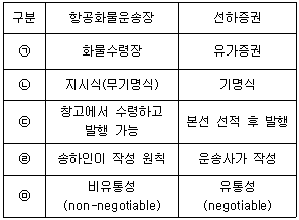
33. 포장명세서의 기능 설명으로 옳지 않은 것은?
34. 공항 항공터미널에서 사용되는 장비로서, 단위탑재용기(ULD) 화물을 운반하는 자체 구동력이 없는 것으로 옳은 것은?
35. 포장표준화의 효과와 관련된 설명으로 가장 옳지 않은 것은?
36. 자동발주시스템(EOS) 도입 효과 설명으로 옳지 않은 것은?
37. 물류의 서비스를 공급자와 고객 간 거래행위가 발생하는 시점을 기준으로 거래 이전, 거래 시점, 거래 이후로 구분하는 경우 거래 이전의 서비스 구성 요소에 관한 내용으로 가장 옳지 않은 것은?
38. 아래 글상자 내용의 물류비 비목별 계산 과정이 순서대로 바르게 나열된 것은?
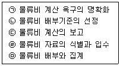
39. 물류채산분석을 물류원가계산과 비교한 특징에 대한 설명으로 가장 옳지 않은 것은?
40. 스마이키(E. W. Smykey)가 주장한 물류의 7R 원칙에 해당되는 내용이 아닌 것은?
3과목: 상권분석
41. 도매업의 경우 생산구조와 소비구조의 특징에 따라 입지유형이 달라진다. 다음 중 다수 생산자에 의한 소량분산형 생산구조와 소수 소비자에 의한 대량집중형 소비구조를 가진 산업에 종사하는 도매상의 입지 특성으로서 가장 옳은 것은?
42. 상권분석에서 소비자의 이질성 때문에 발생하는 공간적 불안정성(spatial non-stability)에 관한 설명으로 가장 옳지 않은 것은?
43. 상권분석을 위해 활용되는 회귀분석에 대한 내용으로 가장 옳지 않은 것은?
44. 체인점의 도미넌트(dominant) 출점전략에 대한 설명으로 옳지 않은 것은?
45. 상가를 신설하기 위해 기존의 건물을 인수하기로 했다. 건물은 면적 2,000m2의 대지 위에 건축된 2개 동(A동, B동)이다. A동은 각 층의 면적이 200m2인 지상3층과 지하1층, B동은 각 층의 면적이 300m2인 지상6층과 지하2층으로 구성되어 있다. 건물 내부 지상층의 주민공동시설 면적의 합은 400m2이고, 건물 외부에는 300m2의 지상주차장(건물부속)이 있다. 이 전체 건물의 용적률은 얼마인가?
46. 근린상권에서 편의품을 판매하는 소규모 점포를 개점하는 상황에서 입지후보지를 평가할 때 고려하는 입지조건에 관한 설명으로 가장 옳지 않은 것은?
47. 상권 및 입지분석과정에서 점포의 위치와 소비자의 분포분석을 통해 관찰할 수 있는 거리감소효과(distance decay effect)에 대한 설명으로 옳지 않은 것은?
48. 유통 점포 네트워크에 대한 입지배정모형(locationallocation model)으로 보기에 가장 옳지 않은 것은?
49. 넬슨(R. L. Nelson)이 제시한 입지선정을 위한 8가지 원칙 가운데 상업단지까지의 동선상 고객 가로채기와 연관된 것으로 단지 내의 특정 입지 평가에 적용할 수 있는 원칙으로 가장 옳지 않은 것은?
50. 소매점포 상권의 크기에 대한 규범론적 설명으로서 가장 옳지 않은 것은?
51. 페터(R. M. Petter)의 공간균배의 원리의 내용으로서 가장 옳지 않은 것은?
52. 아래 글상자의 내용은 상권분석에서 자주 활용되는 어떤 방법에 대한 설명이다. 이 방법과 가장 관련성이 높은 사람으로 옳은 것은?
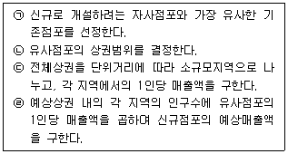
53. 소매상권을 평가하여 소매입지를 선정할 때 활용하는 각종 관련 지수(index)에 대한 설명으로 가장 옳지 않은 것은?
54. 상권분석 모델들 중에서 소비자의 점포방문 패턴을 공간상의 흐름으로 보고 이를 반영하여 특정 점포의 매출액과 상권규모를 예측하는데 활용되는 공간상호작용모델과 관련된 설명으로 가장 옳지 않은 것은?
55. A도시의 인구는 20만명, B도시의 인구는 40만명, 중간에 위치한 C도시의 인구는 6만명이다. A도시와 C도시의 거리는 5Km, C도시와 B도시의 거리는 10Km이다. 라일리(Reilly, W.J.)의 소매인력이론을 적용하여 추정할 때, C도시의 인구 중에서 A도시 상권으로 흡수되는 인구의 숫자로 가장 옳은 것은?
56. 상업시설 건축과 관련하여 필요한 인허가의 종류와 내용은 허가단계 – 착공단계 – 공사단계 – 준공단계의 단계별로 달라진다. 다음 중 준공단계의 인허가업무로서 가장 옳은 것은?
57. Huff모델에서 상권분석 결과를 이용한 상권표현의 도구로 활용할 수 있는 점포선택 등확률선(isoprobability contours)에 대한 설명으로 옳지 않은 것은?
58. 다음은 대형 쇼핑센터의 공간구성요소에 대한 설명들이다. 그 연결이 가장 옳은 것은?
59. 상권구획모형의 일종인 티센다각형(thiessen polygon) 기법에 대한 설명으로 가장 옳지 않은 것은?
60. 지리정보시스템(GIS)에서 공간적으로 동일한 경계선을 가진 두 지도 레이어들에 대해 하나의 레이어에 다른 레이어를 겹쳐 놓고 지도형상과 속성들을 비교하는 중첩(overlay) 기능으로서 가장 옳지 않은 것은?
4과목: 유통마케팅
61. 온라인 쇼핑몰의 마케팅채널에서 구매전환율을 높이기 위해 시도할 수 있는 방안으로 가장 옳지 않은 것은?
62. 온라인 쇼핑몰관리를 위한 KPI(key performance indicator) 및 주요 용어에 대한 설명으로 옳지 않은 것은?
63. SKU(stock keeping unit)에 대한 설명으로 옳지 않은 것은?
64. 재고관리 및 평가에 대한 설명으로 가장 옳지 않은 것은?
65. 아래 글상자의 내용 중 서비스 특성의 소멸성(perishability)을 고려한 전략만을 나열한 것은?
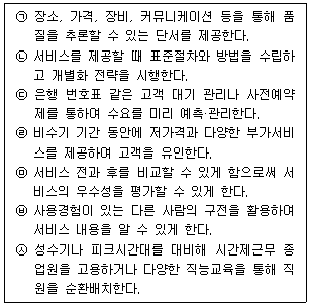
66. 판매촉진지원금에 대한 설명으로 가장 옳지 않은 것은?
67. 다음 중 매력적인 목표시장 선정의 조건에 대한 설명으로 가장 옳지 않은 것은?
68. 아래 글상자의 괄호 안에 들어갈 서비스 품질이 순서대로 바르게 나열된 것은?
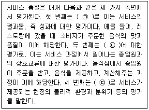
69. 유통업체 브랜드(PB)에 대한 설명으로 가장 옳지 않은 것은?
70. 다음 중 상품 매입조건에 대한 설명으로 가장 옳지 않은 것은?
71. 아래 글상자에서 설명하는 촉진믹스 전략으로 옳은 것은?
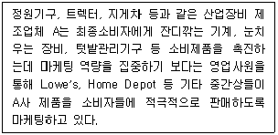
72. 아래 글상자에서 공통적으로 설명하는 고객특성 분석법으로 옳은 것은?
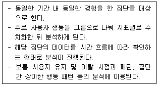
73. 아래 글상자의 사례가 설명하는 시장세분화 변수로 옳은 것은?
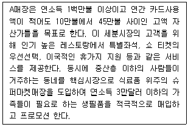
74. 아래 보기 중 재고회전율을 구하는 공식으로 옳은 것은?
75. 아래 글상자에서 설명하는 매장이 수행할만한 상품계획전략으로 가장 옳은 것은?
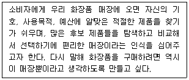
76. 다음 중 수요의 가격탄력성에 대한 설명으로 가장 옳지 않은 것은?
77. 아래 글상자에서 사용하는 촉진방법과 가장 관련성이 높은 학습이론으로 옳은 것은?
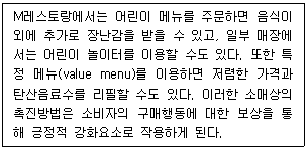
78. 아래 글상자에서 설명하는 광고예산 결정방법으로 옳은 것은?
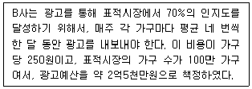
79. 상품가용성에 대한 설명으로 옳지 않은 것은?
80. 다음 중 가격 개념에 대한 설명으로 가장 옳지 않은 것은?
5과목: 유통정보
81. 빅데이터의 기술요건을 수집-공유-저장-분석-시각화 단계로 나누어 볼 때 각 단계별로 필요한 기술요건을 짝지어 놓은 것으로 가장 옳지 않은 것은?
82. 고객관계관리(CRM, customer relationship management)에 관한 내용으로 가장 옳지 않은 것은?
83. 오늘날 유통업체에서는 인공지능(AI, artificial intelligence) 기술을 활용한 정보시스템 활용이 증가하고 있다. AI는 고객 데이터를 이용하기 때문에 올바른 이용이 중요하다. 이에 하버드 대학교 버크만 연구센터에서는 AI 윤리를 위한 8대 원칙을 제시하였는데, 가장 옳지 않은 것은?
84. 공급망관리(공급망 계획, 조달, 제조, 배송)에 인공지능 솔루션을 활용함으로써 발생하는 변화에 대한 설명으로 가장 옳지 않은 것은?
85. 아래 글상자의 괄호 안에 들어갈 기술을 순서대로 바르게 나열한 것으로 가장 옳은 것은?
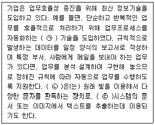
86. 개인정보보호법(법률 제16930호, 2020.2.4., 일부개정)과 관련해서 괄호 안에 들어갈 용어를 순서대로 바르게 나열한 것으로 가장 옳은 것은?
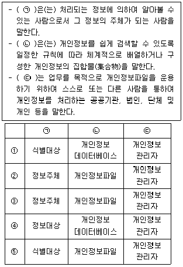
87. 유통 빅데이터 활용에 대한 설명으로 가장 옳지 않은 것은?
88. 아래 글상자의 메타버스에 대한 설명으로 옳지 않은 것을 모두 나열한 것은?
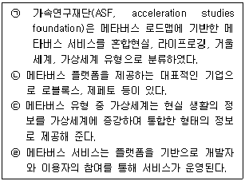
89. 공급사슬 동기화의 장애요인 중 하나로 원활한 시스템 흐름을 막는 병목관리에 대한 설명으로 가장 옳지 않은 것은?
90. 물류 혁신을 위해 자율주행은 매우 중요한 기술이다. 아래 글상자에서 국제자동차기술자협회(SAE)가 제안한 자율주행에 대한 설명으로 가장 옳은 것만을 모두 나열한 것은?
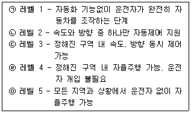
91. 유통정보시스템 개발에 활용되는 기술로 아래 글상자에서 공통적으로 설명하는 용어로 가장 옳은 것은?
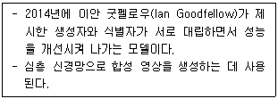
92. 아래 글상자의 괄호 안에 들어갈 용어로 가장 옳은 것은?
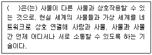
93. 채찍효과(bullwhip effect)에 대한 설명으로 가장 옳지 않은 것은?
94. 물류 및 배송관리시스템 구현에 있어서 동일지역과 업종을 중심으로 수·배송 효율을 높이고, 비용을 절감하기 위해 공동 수·배송을 추진할 경우 이를 달성하기 위한 전제조건으로 가장 옳지 않은 것은?
95. 아래 글상자의 괄호 안에 공통적으로 들어갈 용어로 가장 옳은 것은?
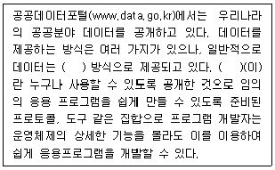
96. 최근 유통업계에서는 신기술을 적극적으로 활용하는 움직임이 늘고 있다. 아래 글상자의 내용과 관계깊은 최신기술로 가장 옳은 것은?
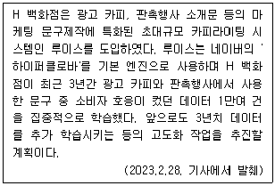
97. 아래 글상자의 내용을 참조하여 ECR(efficient consumer response)시스템이 갖는 무형적 혜택 중 유통기관의 혜택에 속하는 것만을 모두 나열한 것으로 가장 옳은 것은?
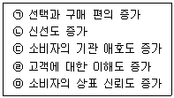
98. 데이터 웨어하우스(DW, data warehouse)에 대한 설명으로 가장 옳지 않은 것은?
99. 유통매장에서 활용하는 IC칩을 이용한 휴대폰 결제방식 중 듀얼슬롯(dual slot) 방식에 대한 설명으로 가장 옳지 않은 것은?
100. 일반적인 지식관리시스템을 실행하는 데 있어서 올바른 추진 방향으로 가장 옳지 않은 것은?